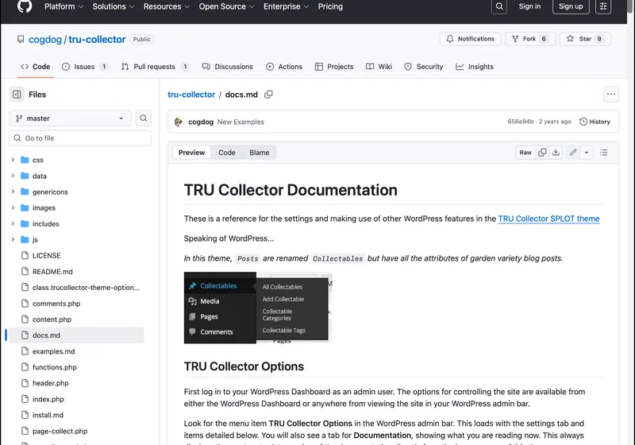
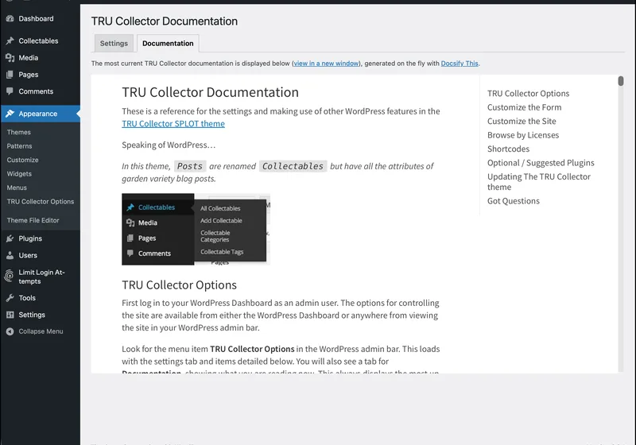

Systems-Oriented Design in Practice: The Structure Beneath the Surface
With over 30 years in software interaction design – since the days of 512×342 pixel screens, for those who remember – I've always been drawn to a systems-oriented way of looking at problems: paying attention to how elements connect, rather than optimizing each one in isolation. Good instincts in software and UX don't come from following guidelines; they come from learning to read the structure beneath the surface. Two of the open-source projects on this site, built on different foundations, ended up illustrating that same lesson from two different directions.
Structure determines behaviour
Docsify-This started with a structural question: what happens if you change publishing from a pipeline into a reference? Most tools structure content as write → upload → format → publish → maintain server – a structure that predictably produces walled gardens and content duplication. Docsify-This changes the structure itself: your Markdown stays in GitHub or Codeberg, the app acts only as a transformation layer, and content is referenced rather than uploaded. Revisiting Donella Meadows' Thinking in Systems, I realized how closely that shift maps onto her ideas – structure determines behaviour, and moving from enclosure (upload into our platform) to federation (keep your content, we'll provide the lens) changes what becomes possible almost automatically. Remixing becomes changing a URL parameter. Revising becomes committing to Git. Retaining is automatic, because the files never left in the first place.
That same address bar is also the leverage point: changing &font-size=36px or &link-color restyles the page instantly, the same Markdown file works as embedded documentation at 16px in Canvas or as a slide deck at 36px in a dark theme, and the “Edit This Page” link turns a reader who spots an error into someone who fixes it, without any central coordination. Alan Levine (@cogdog) put it to real use across his WordPress theme dashboards: a single GitHub update now refreshes documentation across his whole ecosystem automatically. As he described the old way: “Before I was not really keeping them updated as it took multiple edits in multiple places.” None of that came from a feature list – it came from changing the structure underneath.


Meadows would likely call the “Edit This Page” link and the instant URL-param restyling feedback loops – the kind of tight, visible cause-and-effect that helps someone understand they're shaping a system, not just filling out a form. The project's ReadMe also states plainly when not to use it – for SEO-dependent sites, complex workflows, or visual page builders. Clear limits build more trust than trying to be the solution to every publishing need, which is its own kind of systems honesty.
Where does complexity actually belong?
The Grav Helios Course Hub raised a related question, this time from the build side: not just how content flows, but where the complexity of building on someone else's platform should actually live. It started with a single Discord conversation and a small question: how do I change one label – “Version” to “Course” – in the navigation switcher for Grav's brand-new premium Helios theme? Andy Miller, the creator of Grav CMS, pointed me toward an architecture I hadn't considered: handle everything in a dedicated plugin and leave the theme files completely untouched. “That one plugin is their entire customization. Keeps everything else stock.” That constraint – never edit the upstream theme – turned out to be a clarifier, not a limitation: shortcodes moved to the plugin, templates were injected rather than overridden, behaviour changed via hooks rather than direct modification.
The project also surfaced a structural signal disguised as a workload problem. An earlier version had split into separate single-course and multi-course skeletons, and maintaining both took more and more effort over time. That friction wasn't a sign the code needed cleanup – it was a sign the design model was wrong. Multi-course wasn't a variant to bolt on later; it was the default the whole hub should have been built around from the start.
That process surfaced nine design principles, each circling back to the same question: where does this complexity actually belong?
- The people who know how a system wants to be extended are often just a conversation away – especially in open source.
- The real question isn't “can I build this?” but “what does it cost to own this instead of the platform?”
- A feature designed for one domain can map directly onto another, if you look at structure rather than labels.
- A constraint you can't work around is often pointing at the right place to work from.
- A concept built in from the start becomes the centre everything else orients around; added later, it's always negotiating with what's already there.
- Every configuration option is a decision the system has transferred to the user.
- What a system offers should depend on where the user is, not just what they ask for.
- Persistent maintenance friction is diagnostic – it points at a structural problem, not just an implementation one.
- Content and the tools that hold it have different lifespans; treating them the same is a mistake that compounds over time.
That last one is the thread running through everything else on this site: flat-file Markdown keeps content readable and portable no matter what happens to Grav, the theme, or any plugin built on top of it. Portability isn't a technical nicety – it's a statement about where ownership actually resides. The same thinking shaped how the plugin handles failure, too: if the premium Helios theme isn't installed, the site doesn't break – it falls back to a working state, surfaces a helpful admin message, and points toward the license manager. A well-architected system keeps complexity where it belongs, even when you're no longer thinking about it – the same honesty about limits that keeps Docsify-This from trying to be everything to everyone.
Whether it's a course platform or a publishing tool, the pattern repeats: friction that keeps recurring is usually pointing at a structural problem, not an implementation one, and the most useful design work changes the relationships between things rather than polishing any one part in isolation. That's the thread connecting every open-source project on this site – see it in action across the projects themselves, or read more about the person behind them.